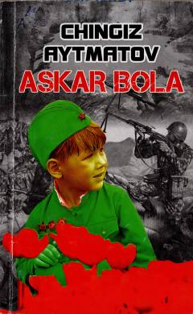

ABUrush davri bolaligining og'ir qismati va insoniy kechinmalar haqidagi ta'sirli hikoya.
Ushbu to'plam Chingiz Aytmatovning mashhur hikoyalaridan biri bo'lib, urush davri bolaligining og'ir qismatini tasvirlaydi. Asarda otasini urushda yo'qotgan kichik Avvalbekning hayoti va uning dunyoqarashi orqali insoniy kechinmalar yoritib berilgan.